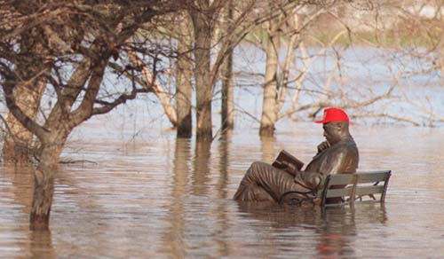
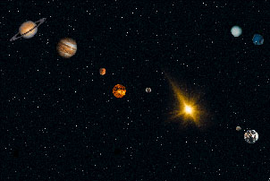

Always
wanted to visit the South Pole? Well, here's the good news: soon, the South
Pole could visit you. It's Thursday the 9th of September 2040, and we're in
for a big surprise.
Thursday
9/11/2040 has inspired a broad range of researchers and publicists to preach
doom and destruction. And no wonder. In the early morning hours of this particular
Thursday, a rare cosmological event will take place. All visible planets --
Mars, Saturn, Jupiter, Mercury and Venus -- will align with both the Sun and
the Moon.
You
won't be able to see much of it, since the brightness of the Sun will make the
view on everything else impossible. But according to the doomsayers, we will
definitely notice something. Just picture this: there's SEVEN huge objects in
the sky, tugging at our tiny planet with their combined gravities. This will
cause the Earth's axis to tilt, moving Middle Africa to the North Pole and the
icy Antarctic to the equator.
It will be quite a disaster. Rapidly, the ice caps of the poles will melt, causing massive floods and huge tsunamis all over the world. Millions will drown, entire continents will be flooded. Not to mention the faith of those poor Africans and Latin Americans, who will suddenly find themselves living on one of the poles!
And
that's just the beginning. The tidal forces of the seven heavenly bodies combined
will trigger earthquakes bigger than we've ever had. Also, there will be
volcanoes erupting everywhere. If you don't drown, chances are you're crushed
by a collapsing building or covered in lava. Well, if that isn't what you
call `the end of the world', what is?
Just
wait -- it could get even worse. Perhaps our planet will be torn apart, some
doomsayers claim. The gravitational forces may literally rip our planet in
two, cleaving it like a cabbage head. It would be an incredible mess, with
little chance of survival.
Another unpleasant possibility is that our planet is pulled
out of orbit, and moved into a wider one. It would become so cold on earth, it
wouldn't matter anymore if you were on the South Pole or not. Everything would
freeze, and our atmosphere would vanish, making life on Earth impossible.
The gruesome scenario of September 2040 has been laid down in detail by many publicists, among others by Richard Noone in his book `Ice: The Ultimate Disaster'. According to Noone, the planets haven't aligned in many thousands of years. Last time it happened, says Noone, it caused Noah's flood. And as you know, a LOT of people had trouble facing that flood.
Oh, but it also could turn out quite differently. For example, nothing at all might happen.
For one thing, Noone is dead wrong in claiming that the alignment is rare. In the 1960s, a Belgium astronomer named Jean Meeus calculated that precisely the same event as the one of September 2040 took place no less than nine times since the year 1000 AD. For example, a seven-body alignment took place on February 5th, 1962. And as far as we know, no poles melted away that day, nor were there any earthquakes or volcanic eruptions.
Although Saturn and Jupiter are BIG planets, they are simply too far away to do us any harm. Their gravitational pull, even if combined, is only a tiny fraction of the gravitational pull the Sun and the Moon exert on our planet. And as you know, these two objects don't kick the Earth's axis over. The only thing we do notice, is the changing of the tides.
And
if you STILL are in doubt, there's this. In fact, we have been lying to
you a
bit. Richard Noone didn't write a book about 2040. His scenario of
quandary and blight dealt with another date: the 5th of May 2000. On that day,
the super alignment took place, too. And as you should be
able to remember, nothing happened on that day either.
 |
 |